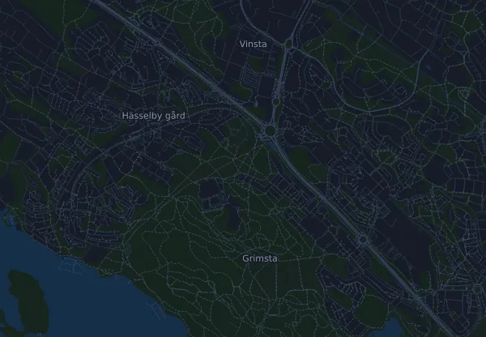

Hässelbyloppet 10 km
- Distance
- 10 km
- Højdemeter
- ↑ 37 m
- Højeste punkt
- 31 m o.h.
- Underlag
- Vej
- Karakter
- Flad
Højdeprofil
Forbered dig med Mila
Mila er en løbecoach i en app. Lægger du et løb ind i din plan, planlægger coachen ugerne frem til start efter din form og giver dig en tidsprognose og en plan for tempo, væske og energi på ruten.

Den rette træning. Den rette dag.
Ruten

Om ruten
Hässelbyloppet er et vejløb på 10 km i Stockholm (Hässelby), Sverige. Ruten har 37 højdemeter stigning og 37 højdemeter fald, 3,7 m pr. km, og regnes dermed som flad. Det højeste punkt ligger 31 m o.h. og det laveste 13 m o.h.
Ruten har ingen sammenhængende stigninger på 25 højdemeter eller mere.
I Mila-appen beskriver coachen ruten i detaljer på dit sprog og planlægger dit tempo og din energi til den.
Tempotabel
Hässelbyloppet 10 km på 40:00 – tid pr. km og mellemtider
4:01 pr. km · km 2,5: 10:02 · km 5: 20:05 · km 7,5: 30:07 · mål: 40:00
Hässelbyloppet 10 km på 50:00 – tid pr. km og mellemtider
5:01 pr. km · km 2,5: 12:33 · km 5: 25:06 · km 7,5: 37:39 · mål: 50:00
Hässelbyloppet 10 km på 1:00:00 – tid pr. km og mellemtider
6:01 pr. km · km 2,5: 15:04 · km 5: 30:07 · km 7,5: 45:11 · mål: 1:00:00
Hässelbyloppet 10 km på 1:10:00 – tid pr. km og mellemtider
7:02 pr. km · km 2,5: 17:34 · km 5: 35:08 · km 7,5: 52:43 · mål: 1:10:00
Tiderne forudsætter et jævnt tempo hele vejen. Det er ren regning, ingen prognose: på stigninger, i trængsel og ved væskedepoter svinger tempoet.
Ofte stillede spørgsmål
Hvornår løbes Hässelbyloppet 10 km?
Datoen for næste udgave er ikke fastlagt endnu.
Hvor langt er Hässelbyloppet 10 km, og hvor mange højdemeter er der?
Løbet er 10 km langt med 37 højdemeter stigning og 37 højdemeter fald. Det højeste punkt ligger 31 m o.h.
Hvordan er ruten på Hässelbyloppet 10 km?
Ruten regnes som flad, med 3,7 højdemeter pr. km i snit. Den har ingen sammenhængende stigninger på 25 højdemeter eller mere. Ruten går fra start til et mål et andet sted. Underlaget er vej.
Hvordan fordeler jeg farten på Hässelbyloppet 10 km?
Gå efter en jævn indsats hele vejen, og hold igen de første kilometer, når benene føles friske, og feltet trækker fra. Ruten er flad, så et jævnt tempo pr. kilometer fungerer godt. I Mila får du en tempoplan til netop denne rute efter din egen form.
Flere løb som dette
Flere løb i nærheden
- Premiärmilen 10 km3. april 2027 · Stockholm (Norra Djurgården), Sverige
- Stockholm Halvmaraton 21 km21. august 2027 · Stockholm, Sverige
- Stockholm Marathon 42 km29. maj 2027 · Stockholm, Sverige
- COOP Kungsholmen Runt 10 km8. maj 2027 · Stockholm (Rålambshovsparken, Kungsholmen), Sverige
- Fjällmaraton 100K29. juli 2027 · Fångåmon–Ottsjö, Undersåker (Årefjällen), Sverige
- Fjällmaraton Sälen 42 km21. august 2027 · Sälen (Lindvallen, Experiumtorget), Sverige
Forbered dig med Mila
Den rette træning. Den rette dag.
Oplysningerne kommer fra rutefilen og arrangørens information. Tjek dato, starttider og regler hos arrangøren.
Mila er ikke tilknyttet, sponsoreret af eller godkendt af arrangøren eller løbets sponsorer. Navne og varemærker tilhører deres ejere. Arrangør eller rettighedshaver? Bed om ændring eller fjernelse